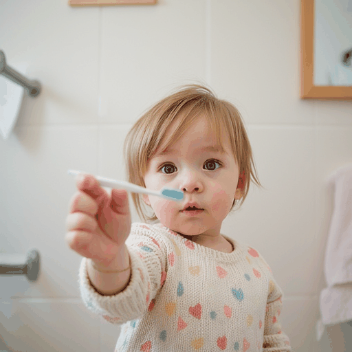
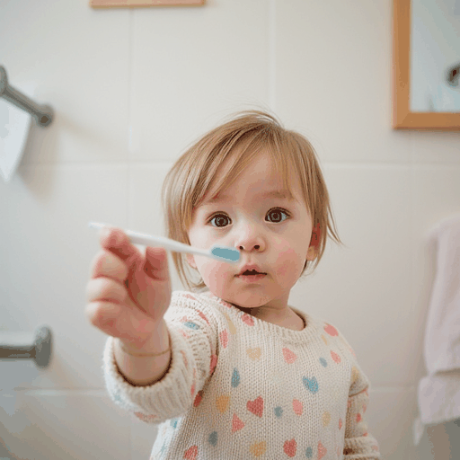
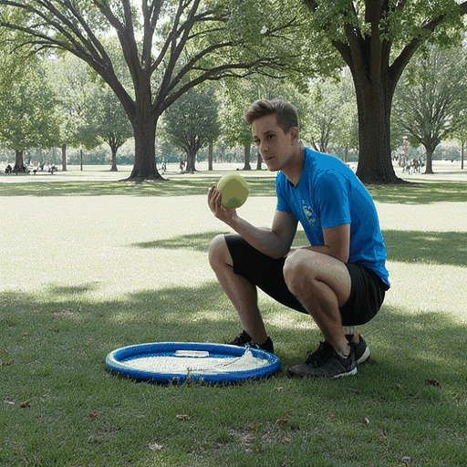
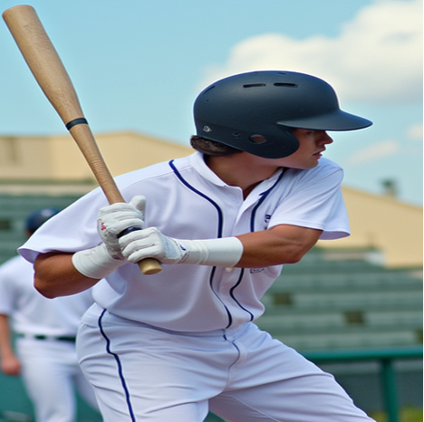
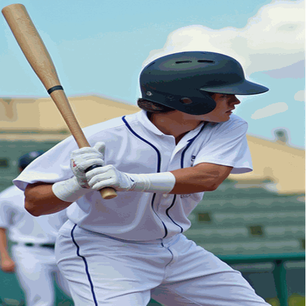
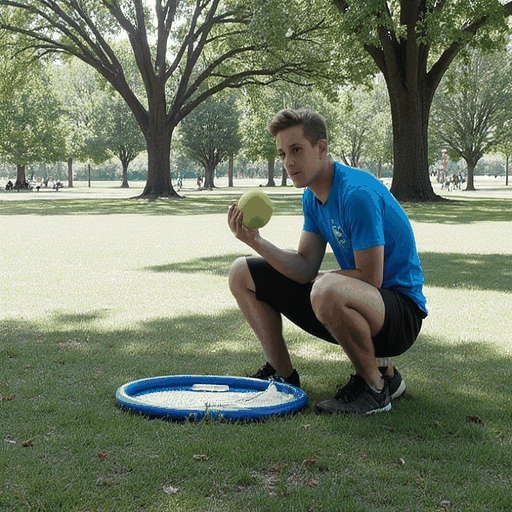
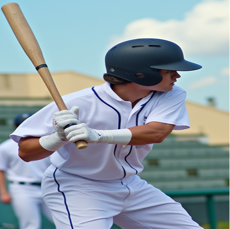
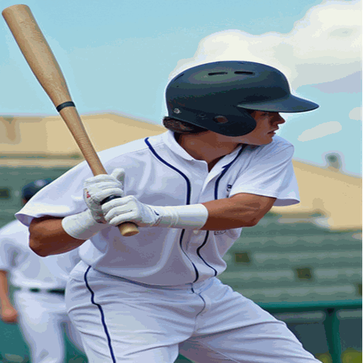

Shape Editing

 

 






Visual examples of applications of the proposed Vec2Pix framework, where the left column depicts input SVGs and the right column presents the corresponding generated images. Vec2Pix offers 1) Easy-to-control it supports layer-wise object insertion, removal, modification, color adjustment, shape editing, and flexible composition; 2) High fidelity: it caches semantic and color information through hierarchical SVG representations; and 3) Strong input-generation alignment: it ensures precise semantic and structure alignment between SVG inputs and generated images.
Recent advances in image generation have achieved remarkable visual quality, while a fundamental challenge remains: Can image generation be controlled at the element level, enabling intuitive modifications such as adjusting shapes, altering colors, or adding and removing objects? In this work, we address this challenge by introducing layer-wise controllable generation through simplified vector graphics (VGs). Our approach first efficiently parses images into hierarchical VG representations that are highly semantic-aligned and structurally coherent. Building on this representation, we design a novel image synthesis framework guided by VGs, allowing users to freely modify elements and seamlessly translate these edits into photorealistic outputs. By leveraging the structural and semantic features of VGs in conjunction with noise prediction, our method provides precise control over geometry, color, and object semantics. Extensive experiments demonstrate the effectiveness of our approach in diverse applications, including image editing, object-level manipulation, and fine-grained content creation, establishing a new paradigm for controllable image generation.
Overall framework of our Vec2Pix and its workflow. ① Prepare SVG: the input is obtained by converting a real or AI-generated image into SVG, or by selecting an existing SVG from a gallery. ② SVG-to-Image: the SVG information will be conditioned using token concatenation and noise prediction from vectors (NPV) module. The NPV module incorporates the SVG condition and integrates trainable LoRA adapters and prediction heads to estimate the mean and variance of the initial noise, rather than directly sampling from Gaussian noise. If the user wishes to re-generate or modify specific parts, we proceed with steps ③–⑤. ③ Image-to-SVG: the generated image is converted back into SVG using a diffusion model to produce multiple layers, followed by SAM to generate semantic masks for each layer, and further refined via 2D Gaussian optimization. ④ SVG Editing: users can interactively edit the SVG by adjusting curves and attributes. ⑤ Re-generation: the modified SVG is used as guidance to synthesize the final updated result.